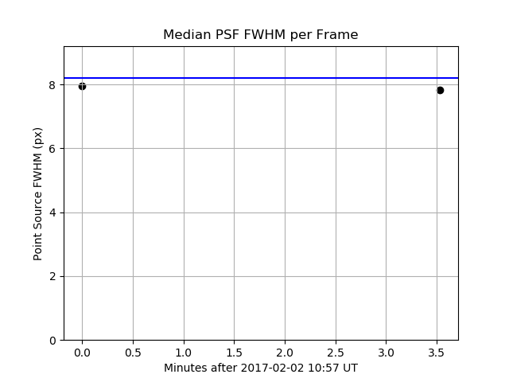
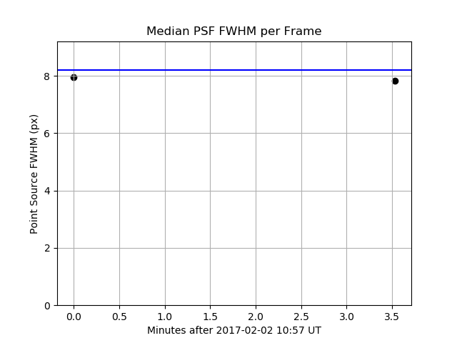
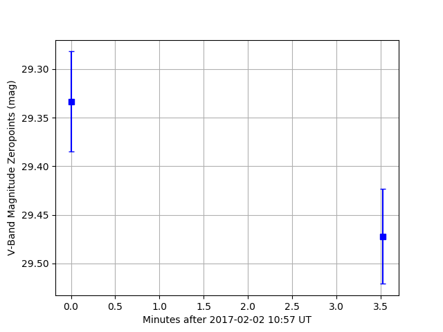

Photometry Pipeline Diagnostic Output
| Data Directory | /data/path |
|---|
| Telescope/Instrument | VATT/VATT4k |
|---|
| Number of Frames | 2 |
|---|
| Raw Filter Identifier | TOP 2 BOT 1 |
|---|
| Translated Filter Identifier | V |
|---|
| Log File | available here |
|---|
Data Summary
| Idx | Filename | Observation Midtime (UT) | Object Name | Airmass | Exptime (s) | Pixel Size (") | Binning | FoV (') |
|---|
| 1 | mscience0217.fits | 2017-02-02 10:57:33.149 | 3552 | 1.19 | 180.0 | 0.19 x 0.19 | 2 x 2 | 12.7 x 12.7 |
| 2 | mscience0218.fits | 2017-02-02 11:01:04.845 | 3552 | 1.19 | 180.0 | 0.19 x 0.19 | 2 x 2 | 12.7 x 12.7 |
Registration
Registration based on GAIA catalog:
All frames registered successfully
| Filename | CAS | CXY | σRA (arcsec) | σDEC (arcsec) | χ2Reference | χ2Internal |
| mscience0217.fits | 10.9 | 9.6 | 0.017 | 0.019 | 2.464460e-07 | 2.437970e-07 |
| mscience0218.fits | 10.3 | 9.4 | 0.016 | 0.015 | 1.711520e-07 | 2.437970e-07 |
Legend: CAS: position angle/scale contrast (values >2.5 are ok); CXY: xy-shift contrast (values >2.5 are ok); σRA and σDEC refer to the internal astrometric uncertainties as provided by SCAMP; χ2Reference and χ2Internal refer to the χ2 statistics based on the reference catalog and the respective frame as provided by SCAMP.
Instrumental Photometry
| Photometry Method | Aperture Photometry |
|---|
| Source Extractor MINAREA (px) | 12.0 |
|---|
| Source Extractor Detection Threshold (σ) | 1.5 |
|---|
| Aperture Radius (px) | 4.11 |
|---|
| Aperture Radius Basis | 20 target detections and 20 background detections |
|---|
| Aperture Radius Strategy | target+background fluxes > fluxlimit, flux difference < margin |
|---|
 

Photometric Calibration
| Reference Catalog | PANSTARRS_transformed |
|---|
| Reference Catalog History | 210 sources downloaded, 210 transformed to V (Vega) |
|---|
| Target Filter | V |
|---|

Photometry Results
3552 Don Quixote (1983 SA)
Control Star